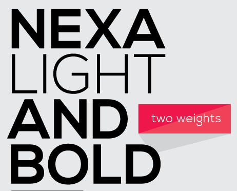
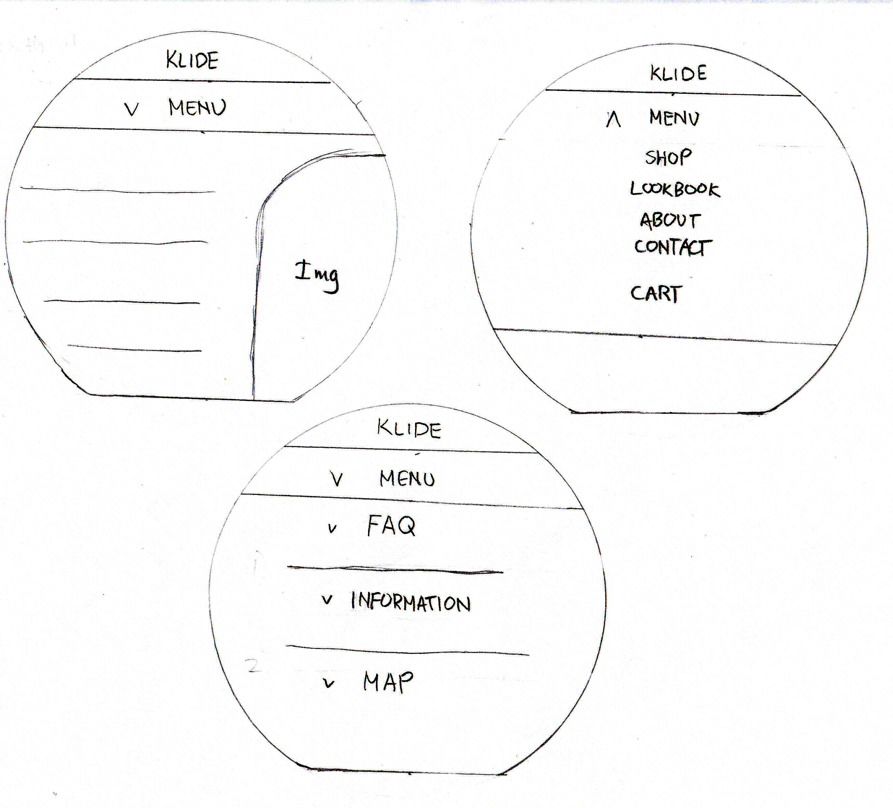
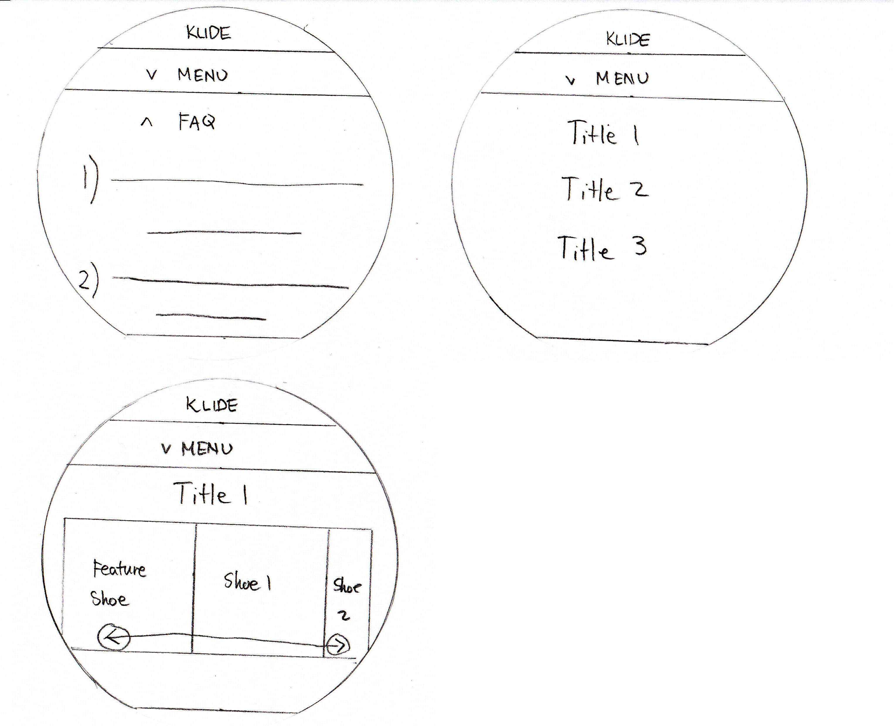
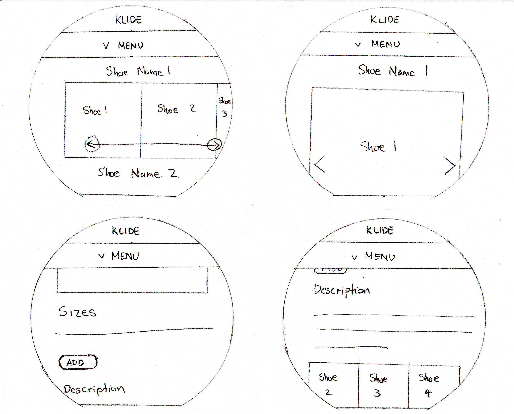
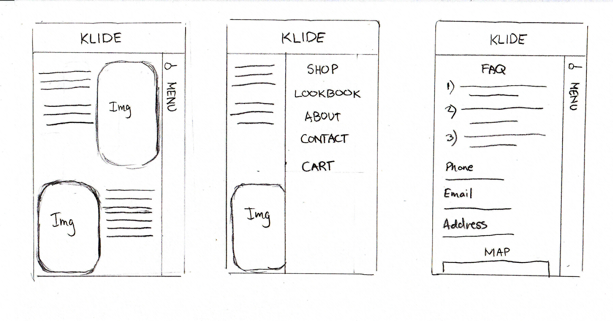
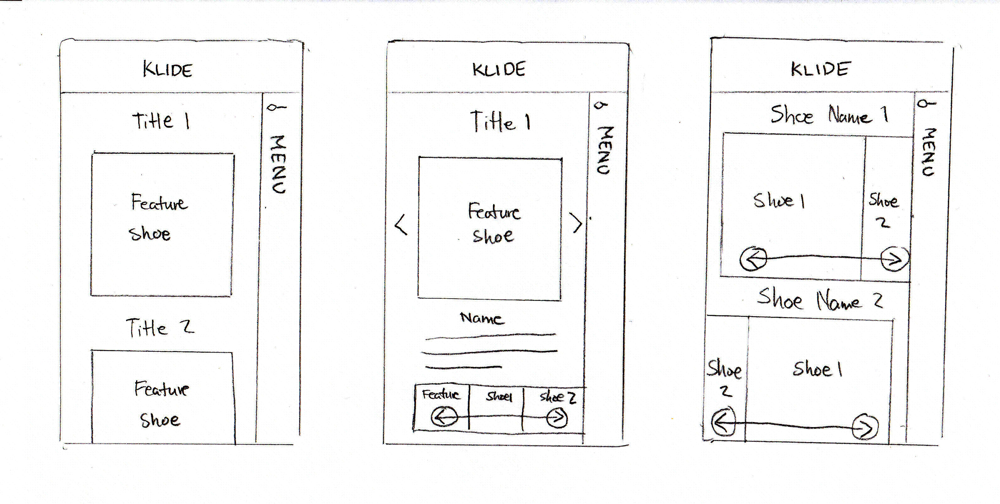
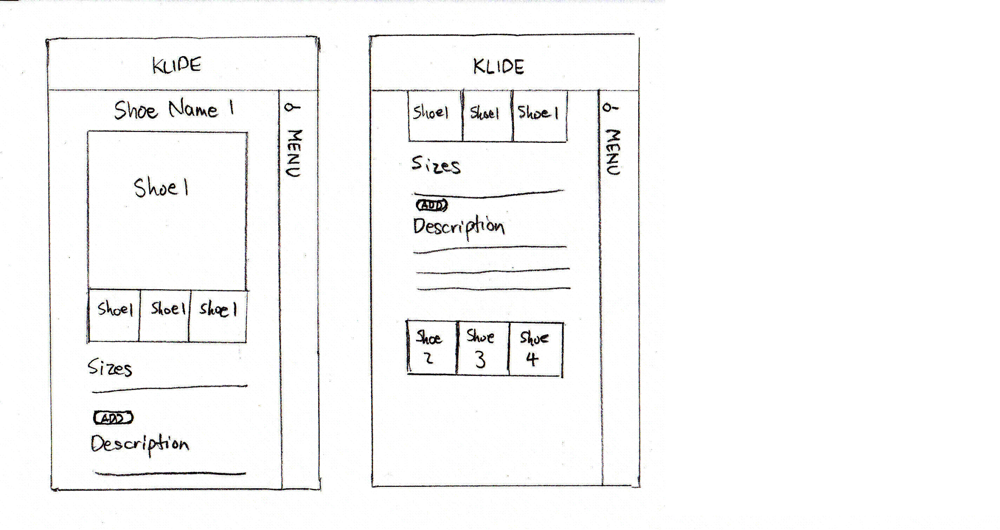
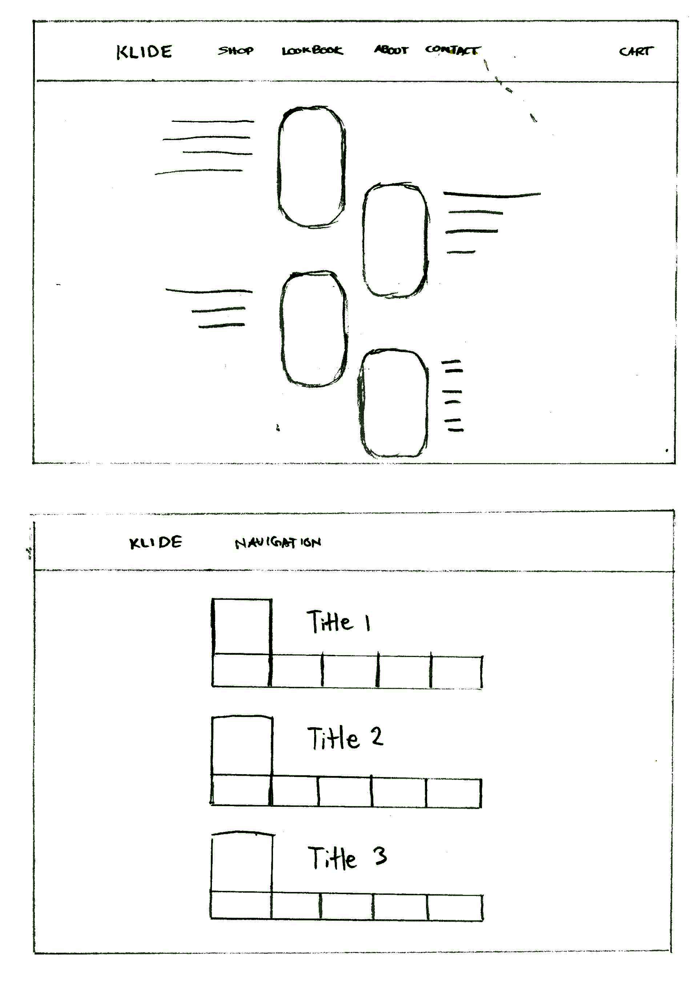
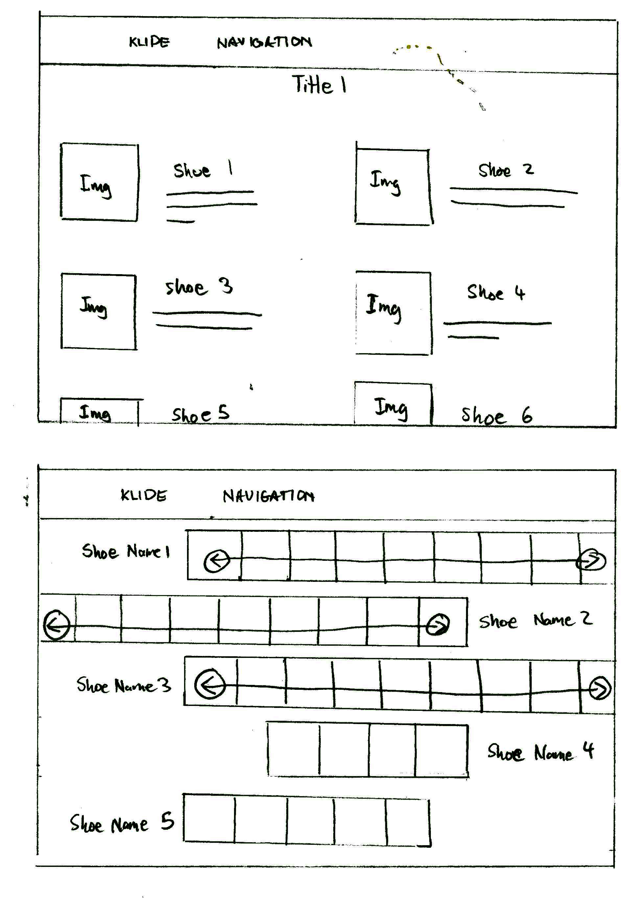
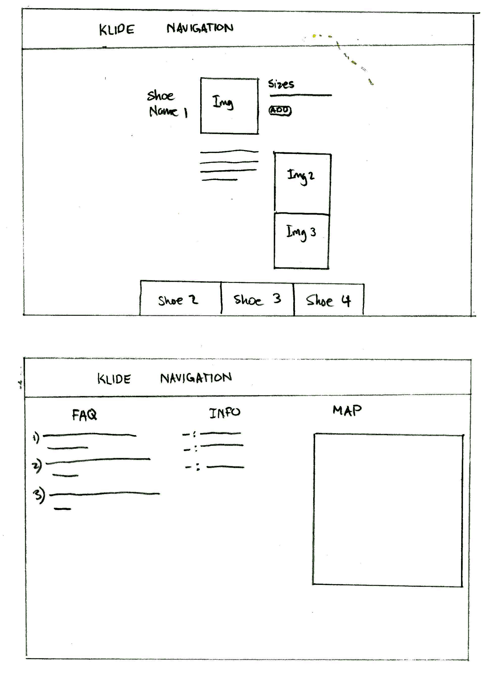

Combine Comfort and Casual style for the modern man
providing the fashion without the sacrifice of comfort.
Palette
Source This will be the combination of colors that I will use.
The dark blue and dark grey will be used for navigation purposes like the Navigation bar and buttons.
The light grey will be used for background color.
The black will be used for fonts in the light gray background while white will be used in navigation and buttons.
Brand Components
The Logo of the Company.
Font TypeFace

This is the typeface I will use.This is how the logo will look on the website and on the shoes.
Tasks
User finds about who and what the company is
User browse the collections
User buys and adds to cart
User view detailed description and pictures of shoe
User finds the contact information
Smart Watch Wireframes

User will use a menu button underneath the logo for easy access to navigation and still providing area for content.

In the Contacts page, the content is hidden until the header is pressed. Lookbook only shows the title of the line.

Viewing collection will still have side scrolling. Description will have a more compact layout.
Smartphone Wireframes

Navigation will be a menu bar from the right.

Layout is more compact compared to Desktop version

Here is where a user can get description of a particular shoe and add it to cart for mobile.
4K Resolution Wireframes

The layout will be mostly centered

In the Lookbook, all the shoe in the collection can be displayed. When shopping, there is more room to display the different types of shoes.

The Details and About page can be viewed in a single page